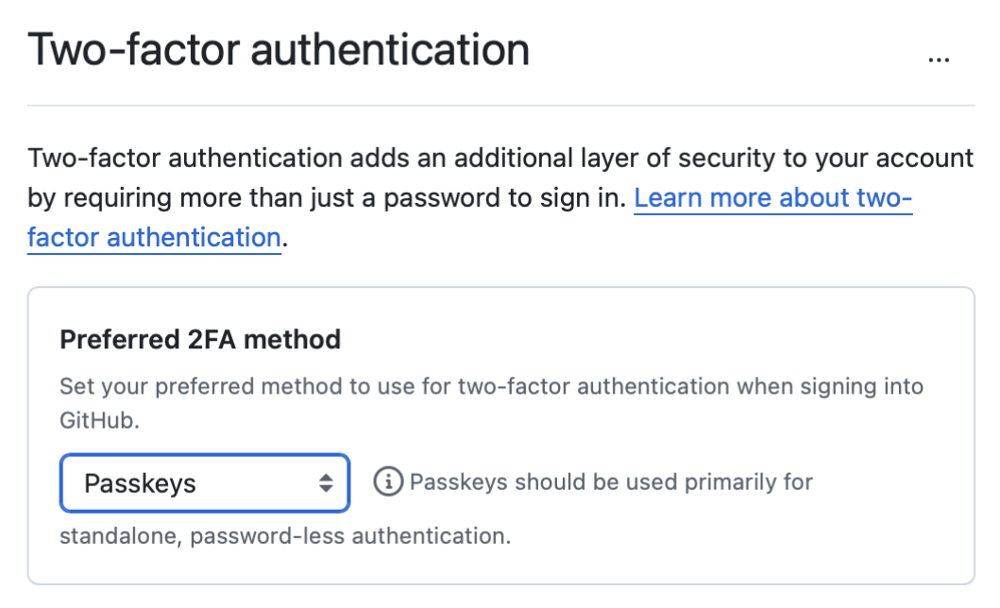
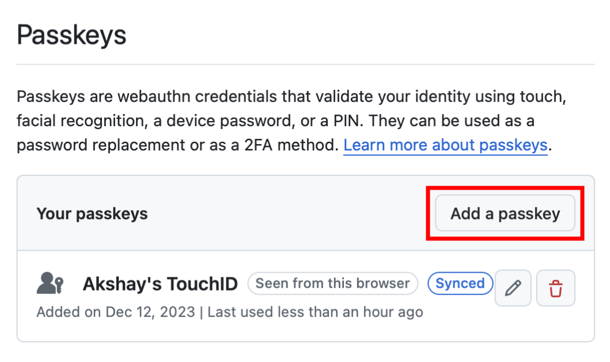
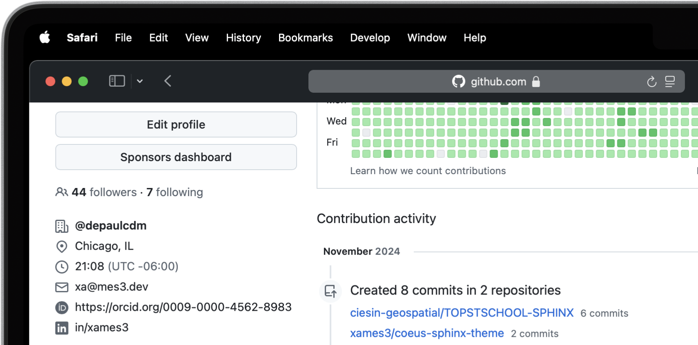

Accounts Setup
Set up essential accounts needed to contribute to Open Science. Follow these easy, step-by-step guides to create and configure the accounts required for contributing towards open science.

TOPSTSCHOOL Development Team
Open Science Contributor
In the world of open science, certain digital tools and platforms are indispensable for sharing research, collaborating with peers, and managing your scientific identity. Before diving into your open science journey, setting up accounts on some key platforms will empower you to fully participate in this transparent, collaborative ecosystem. Below, we’ll walk through the importance of each account, real-world use cases, and practical examples of how they are utilized in open science workflows.
GitHub

GitHub is one of the most powerful tools in the world of collaborative research, open science, and software development. It’s more than just a platform for storing code — it’s a vibrant community where you can contribute to projects, share data, and collaborate with fellow researchers from all over the world. Whether you’re a beginner or a seasoned coder, GitHub provides the tools you need to manage projects, contribute to Open Science, and share your findings.
Importance for Open Science
Version Control. Keeps track of all changes to your code, making it easy to revert to previous versions if necessary. This is crucial in research projects where reproducibility is key.
Collaborative Research. Enables multiple researchers to work together on the same project, with features like forking, pull requests, and issue tracking. For instance, a team of climate scientists may use GitHub to manage code for analyzing climate models. Each team member contributes code and reviews changes through pull requests.
Open Access. You can make your repositories public, allowing others to view, use, and contribute to your research. Example for this would be an ecologist sharing a Python package on GitHub that automates the analysis of satellite imagery, allowing others to replicate or build on the work.
At its core, GitHub is a hosting service for version control using Git. This means it helps you track changes in your work, collaborate with others seamlessly, and manage multiple versions of a project. Many of NASA’s open science projects, including the TOPS SCHOOL initiative, use GitHub to share their work and invite contributions from the global community. So, setting up a GitHub account is the first step toward being part of this exciting, inclusive movement.
Let’s walk through how to create your personal GitHub account and get started with open science!
Note
If you already have a GitHub account, you can skip this guide and checkout things to do to Securing Your GitHub Account below.
Creating GitHub Account
Go to GitHub.
In the upper-right corner of the page, click on the Sign up button to start creating your personal account. GitHub will guide you through the process, one step at a time.
You will be asked for a username, email address, and to create a password.
Once you’ve entered your details, GitHub will send a verification email to the address you provided.
Check your inbox (and your spam folder if you don’t see it) and click the link to verify your email address.
Without verifying your email, you won’t be able to perform certain tasks like creating repositories, so this step is important!
You’ll be asked to complete a simple CAPTCHA (a quick task to confirm you’re not a robot). Just follow the instructions, and you’re good to go.
GitHub will prompt you to choose a plan. For most users just starting with Open Science, the Free plan is more than enough. You can always upgrade later if you need advanced features like private repositories, but for now, you’re all set with the free option!
Once your account is set up, you’ll land on your GitHub dashboard. This is your home base for creating projects, exploring repositories, and contributing to open science. GitHub offers a helpful tutorial called “Hello World” to get you started with the basics — like creating your first repository, etc.

But before you move on, take a moment to congratulate yourself. You’ve just taken a significant step toward being part of the open science community!
Securing Your GitHub Account
GitHub is an integral platform for collaborative research and open-source projects, but with this openness comes the need for robust security measures. By following best practices, you can ensure your research and data are protected against unauthorized access. As of March 2023, GitHub required all users who contribute code on GitHub to enable one or more forms of two-factor authentication (2FA). Here’s a detailed guide on securing your GitHub account. All the security settings are accessible using the same steps.
Navigate to Security Settings by clicking on to your
We strongly recommend that you configure 2FA for your account. 2FA is an extra layer of security that can help keep your account secure. Two-factor Authentication (2FA) adds an extra layer of security to your GitHub account by requiring a second form of verification beyond just your password. Here’s how to set it up:
{kind=link}

Under the “Two-factor authentication” section, click the button to begin the setup process. Choose your authentication method GitHub offers several 2FA options [1].
Follow the setup instructions and remaining prompts to complete the 2FA setup. Ensure you test the 2FA method to confirm it’s working properly.
You can add passkeys to your account so that you can sign in safely and easily, without requiring a password and two-factor authentication. You can also use passkeys when performing a sensitive action (sudo mode), or to authenticate a password reset.
Passkeys allow you to sign in securely to GitHub in your browser without having to input your password. If you use two-factor authentication (2FA), passkeys satisfy both password and 2FA requirements, so you can complete your sign in with a single step. If you don’t use 2FA, using a passkey will skip the requirement to verify a new device via email. You can also use passkeys for sudo mode and resetting your password.
Passkeys are pairs of cryptographic keys (a public key and a private key) that are stored by an authenticator you control. The authenticator can prove that a user is present and is authorized to use the passkey.
{kind=link}

Under the “Passkeys” section, click the button which says “Add a passkey” to begin the a process.
Follow the setup instructions and remaining prompts to complete the setup. [2] At the prompt, follow the steps outlined by the passkey provider.
On the next page, review the information confirming that a passkey was successfully registered, then click Done.
You can access and write data in repositories on GitHub using SSH (Secure Shell Protocol). When you connect via SSH, you authenticate using a private key file on your local machine. When you set up SSH, you will need to generate a new private SSH key and add it to the SSH agent. You must also add the public SSH key to your account on GitHub before you use the key to authenticate or sign commits.
Tip
Using the SSH protocol, you can connect and authenticate to remote servers and services. With SSH keys, you can connect to GitHub without supplying your username and personal access token at each visit. You can also use an SSH key to sign commits.
ORCID
Next, you’ll learn how to create your ORCID account, an important step to ensure that your research and contributions are easily identifiable and accessible in the Open Science community. Don’t worry if this is your first time doing this — the process is straightforward, and this guide will help you through each step. Before we dive into the steps, let’s talk about why having an ORCID account is important.
ORCID provides a unique, persistent identifier for researchers, ensuring that your contributions are correctly attributed to you, regardless of any changes Open Science, where collaboration and transparency are key. Your ORCID profile becomes your digital fingerprint in the world of research, linking your work to your name in a global, accessible database.
Creating ORCID Account
Go to ORCID.
You’ll see a form asking for some basic information. No worries, this will only take a minute or two. Enter your information like your first and last name, primary email address (this is where all your notifications will be sent), possibly a secondary email address (optional but recommended, to ensure you don’t lose access in case you forget your credentials).
Next would be the password, make sure your password is something memorable but secure. Instructions about the password requirements would be mentioned while entering the password.
Before you complete the registration, you’ll need to agree to ORCID’s terms. These are pretty straightforward and ensure that your data is used responsibly.
Now that your account is created, ORCID will send a verification email to primary email address you provided. It’s important to verify your email to complete the setup. Check your inbox (and your spam folder if you don’t see it) and click the link to verify your email address.
Tip
Set your visibility preferences. ORCID gives you control over the privacy of your information. You can set your profile to be:
Everyone. Anyone can see your information.
Trusted parties. Only trusted parties (like your institution) can view your profile.
Only me. Only you can see your information.
It is best to keep it Everyone to maximize visibility for your work in Open Science, but you can always change it later.
Make the Most of Your ORCID Account
Now that you’ve created and set up your ORCID account, you’re ready to start using your ORCID ID in your research. Include it in your CV, Research papers, Articles, Conference presentations and Grant applications. This unique identifier will ensure that all your work is properly attributed to you, wherever it’s shared.
Personalizing your ORCID account is crucial in making sure your ORCID profile represents you well. The more information you provide, the easier it will be for collaborators and institutions to find you and recognize your work. ORCID supports integration with various platforms, including GitHub and LinkedIn. You can link your ORCID profile to your GitHub account to create a cohesive professional identity across platforms.

Your ORCID profile is a living document. As your career progresses, be sure to keep it updated with your latest contributions, projects, and affiliations. This is especially important in Open Science, where collaboration and visibility are key. Set a reminder to check and update your profile every few months. That way, your information stays fresh and accurate.
With your ORCID account ready, you’re now one step closer to engaging fully with the Open Science community. Remember, Open Science is all about transparency, accessibility, and collaboration. By taking the time to set up your ORCID account, you’re contributing to a global movement dedicated to making science open to all.
Zenodo

Zenodo is a versatile, open access data repository developed under the European OpenAIRE program and operated by CERN. Launched to support the open science movement, Zenodo provides a platform for researchers to share, publish, and archive a wide variety of research outputs, including datasets, software, publications, and multimedia. It is an indispensable tool for scientists committed to the principles of open science, ensuring that their work is easily findable, accessible, citable, and reusable.
Importance in Open Science
Long-Term Preservation and Accessibility. Zenodo ensures that research outputs are archived securely and remain accessible over the long term. By partnering with CERN, a world leader in data preservation, Zenodo offers robust infrastructure that guarantees your work will not be lost or forgotten.
DOIs for Every Output. One of Zenodo’s most powerful features is its ability to assign DOIs (Digital Object Identifiers) to all research outputs. This feature gives your work a permanent, citable reference, ensuring that you receive proper credit and recognition.
Supporting Transparency and Reproducibility. Zenodo ensures that research outputs are openly available and reproducible. By archiving data and software with detailed metadata and licensing information, researchers make it easier for others to validate findings and build upon existing work.
Integration with GitHub. Zenodo integrates seamlessly with GitHub, a popular platform for hosting code and collaborating on software projects. Researchers can set up Zenodo to automatically archive GitHub repositories, creating versioned DOIs for each software release.
Zenodo plays a crucial role in the scientific ecosystem by offering free and secure data hosting while also assigning Digital Object Identifiers (DOIs) to ensure research outputs are properly credited and remain citable. Zenodo is a popular choice for publishing datasets in a citable format. Researchers can upload large datasets, organize them with detailed metadata, and share them with a DOI that ensures proper citation and credit. Software is an increasingly important part of research, and Zenodo provides a reliable way to share and cite code. Researchers can link their GitHub repositories and create DOIs for specific releases.
Creating Zenodo Account
Creating a Zenodo account is super simple if you already have a GitHub or an ORCID account. If not already, checkout Creating GitHub Account or Creating ORCID Account.
Go to Zenodo.
Click on Sign up. Here, you can choose to either sign up with your information by providing them or you can link your GitHub or ORCID accounts. If you choose the former, fill in the necessary details like your username, full name, affiliations, email and a password.
Once everything is entered, simply click Sign Up.
Integrating with GitHub and ORCID
Now that you’ve created and set up your Zenodo account, you’re ready to link it with GitHub and ORCID. Follow the on screen instructions and integrate your respective accounts. The complete integration would look something like below:
NASA EarthData
NASA EarthData is a web-based system that provides global access to Earth science data from NASA’s Earth Observing System Data and Information System (EOSDIS [3]). EOSDIS manages, stores, and distributes a vast array of Earth science data gathered from NASA’s Earth Observing satellites and field measurement programs. These datasets encompass critical variables like atmospheric composition, oceanography, land cover, climate, natural disasters, and more.
Importance in Open Science
NASA EarthData embodies the principles of open science by offering free, unrestricted access to data that is crucial for understanding our planet. In line with the FAIR principles — Findable, Accessible, Interoperable, and Reusable — NASA EarthData makes complex scientific information available in a way that fosters transparency, reproducibility, and collaborative research.
Promoting Transparency and Reproducibility. By providing unrestricted access to high-quality environmental data, NASA EarthData ensures that research findings are reproducible and verifiable. Scientists from anywhere in the world can use the same datasets, run their own analyses, and compare results, which strengthens the credibility of scientific research.
Enabling Interdisciplinary Collaboration. Environmental challenges, such as climate change, require input from multiple scientific disciplines. NASA EarthData facilitates this by offering diverse datasets that can be used across fields like meteorology, ecology, sociology, and economics. This fosters a spirit of collaboration and cross-pollination of ideas.
Supporting Global Efforts to Tackle Environmental Issues. From climate change to disaster management, NASA EarthData provides critical insights that inform global efforts to protect the planet. Open access to this data empowers not just scientists but also policymakers, educators, and activists working toward environmental sustainability.
Researchers, scientists, policymakers, and educators worldwide use NASA EarthData to address pressing scientific questions and societal challenges. For researchers working with Earth science data, NASA EarthData provides access to extensive datasets.
Climate Change Research. NASA EarthData provides researchers with critical information on global temperature patterns, ice sheet dynamics, sea level rise, and carbon dioxide concentrations. Using this data, climate scientists can model future scenarios and develop strategies to mitigate climate change effects.
Natural Disaster Monitoring and Response. NASA EarthData plays a pivotal role in disaster management by offering near-real-time data on hurricanes, wildfires [4], earthquakes [5], and other natural disasters. [6] This data is crucial for tracking the progression of a disaster and coordinating response efforts.
Environmental Justice and Health Research. Researchers and policy makers use NASA EarthData to study the environmental factors affecting human health, such as air quality [7] and water contamination. [8] This data helps identify regions disproportionately affected by pollution and guides efforts toward achieving environmental justice. [9]
Agriculture, Water Resource Management and Food Security. Agricultural scientists use data from NASA EarthData to monitor crop health, predict yields, and understand the impacts of drought and other climate-related factors. This information is essential for ensuring food security in vulnerable regions.
Global Access to Critical Environmental Data. NASA EarthData democratizes access to some of the most comprehensive Earth science datasets available. With data spanning decades, it provides a historical perspective that can help researchers analyze trends and patterns over time. This kind of data is critical for climate studies, disaster management, and environmental monitoring.
High-Quality and Reliable Data. All data hosted on NASA EarthData is meticulously curated and validated, making it highly reliable for research and analysis. These datasets come from state-of-the-art satellite missions and are updated frequently, providing researchers with up-to-date information on global environmental changes.
Supporting Scientific Collaboration. Open Access to NASA EarthData encourages collaboration among scientists across different disciplines and geographic locations. For example, a climate scientist studying global warming in the Arctic can share insights and data with an agricultural researcher investigating crop impacts in Asia. This interdisciplinary collaboration fosters a holistic understanding of Earth’s interconnected systems.
Creating EarthData Account
Go to EarthData.
Click on Register. Like ORCID, you’ll see a form asking for some basic information. Enter your information like your username and password. Confirm the password once. Instructions about the password requirements would be mentioned while entering the password.
Next would be the first and last name, primary email address, your Country of Research and Affiliations.
Review and accept the EarthData terms of use and privacy policy.
Finally, Click the Register For EarthData Login button to complete the form submission.
Up Next
Congratulations!
You’ve now successfully set up some of the most critical accounts that will empower your journey in open science. These platforms will serve as your foundation, enabling you to share, collaborate, and publish research data while adhering to the highest standards of openness and accessibility. These accounts were your first steps into the open science landscape, and each one is an important piece of the puzzle. Whether you’re archiving your research, sharing datasets, or managing your scholarly identity, you’re now equipped to participate in a global community dedicated to transparency, reproducibility, and collaboration.
With your foundational accounts established, it’s time to gear up with the tools that will make your open science experience efficient and effective. In the next section, we’ll explore the essential software and platforms you’ll need. This upcoming guide will walk you through the necessary tools, explain its significance, and provide detailed instructions on setting them up and using them effectively. We’ll also cover best practices to enhance your workflow and collaborate with other researchers around the world.